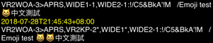
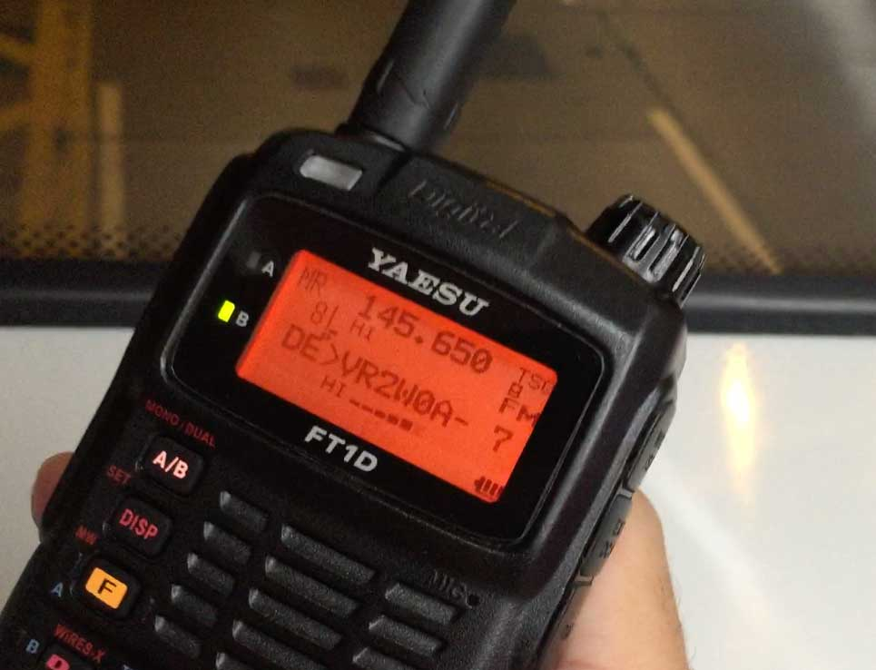

APRS is a registered trademark of Bob Bruninga. He is the creator of the APRS system.
APRS stands for: Automatic Packet Reporting System.
APRS is a digital communications protocol that can exchanges information among large number of stations both local and global.
You as a licensed Amateur Radio operators can send and receive APRS location and message in 2 ways:
You can connect directly with the global APRS-IS network by Internet. Messages reaching the gateways will be relayed to the APRS-IS feed.
The PulseModem A will display messages from the APRS-IS, 100km around your current location.
APRS messages are short in length, in less than 100 bytes.
Messages are encoded in AX.25 protocol with Bell 202 AFSK modulation.
PulseModem A will play the encoded message through the audio port of your iOS device, to your radio.
